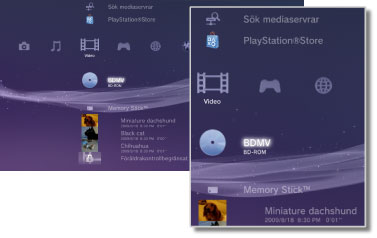

Video > Videokategori
Videokategori
Följande ikoner visas under  Video. Ikonerna som visas varierar beroende på vilka villkor som används.
Video. Ikonerna som visas varierar beroende på vilka villkor som används.

 |
Verktyg för BD-data | Administrativ data som används av en Blu-ray Disc (BD) sparas. |
|---|---|---|
 |
Sök mediaservrar | Starta en sökning efter DLNA-mediaservrar som är anslutna till samma nätverk. |
 |
Mediaserver | Anslut till DLNA-mediaservrar och spela upp de videofiler som finns sparade där. Vilken ikon som visas varierar med typen av server. |
 |
PlayStation®Store | Se information från PlayStation®Store. Denna ikon visas bara i länder och regioner där videobutiken i PlayStation®Store finns tillgänglig. |
 |
BD-ROM/BD-R/BD-RE | Spela en Blu-ray-skiva (BD). |
 |
DVD-ROM/DVD-R/DVD+R/DVD-RW/DVD+RW | Spela upp en DVD- eller AVCHD-skiva. |
 |
Dataskiva | Spela upp videofiler som sparats på kompatibel, inspelbar skiva som t ex en CD-R- eller DVD-R-skiva. |
 |
Memory Stick™ | Spela upp videofiler som sparats på ett Memory Stick™.* |
 |
SD Memory Card | Spela upp videofiler som sparats på ett SD Memory Card.* |
 |
CompactFlash® | Spela upp videofiler som sparats på ett CompactFlash®.* |
 |
PSP™ (PlayStation®Portable) | Spela upp videofiler som sparats på PSP™-systemets Memory Stick™. |
 |
PSP™ (PlayStation®Portable) | Spela upp videofiler som sparats i systemlagringen i PSP™go-systemet. |
 |
Digitalkamera | Visa videofiler som sparats på en digitalkamera som är kompatibel med PS3™-systemet. |
 |
WALKMAN®/ATRAC Audio Device（WALKMAN®） | Spela upp videofiler sparade på en WALKMAN®/ATRAC Audio Device (WALKMAN®). |
 |
ATRAC Audio Device | Spela upp videofiler sparade på en ATRAC Audio Device. |
 |
USB-enhet | Spela upp videofiler som sparats på ett USB-minne. |
 |
Digitalkamerafilmer | Spela upp videofiler som sparats i DCIM-mappen på lagringsmediet. |
|
(mapp) | Den här ikonen visas för mappar som skapats på lagringsmediet med en dator. |
 |
(filer som sparats på hårddisken) | Spela upp videofiler som sparats på PS3™-systemets hårddisk. Miniatyrbilder visas. |
 |
(filer som laddats ner på hårddisken) | Den här ikonen visas för videofiler som sparats på hårddisken. När de startas installeras data och videofilen kan spelas upp. |
| * |
En lämplig USB-adapter (medföljer ej) krävs för att använda lagringsmedia med vissa modeller. När används lagringsmediet används med en USB-adapter kommer den att visas som |
|---|
 (USB-enhet).
(USB-enhet).Tips!
- Detaljerad information om DLNA finns under
 (Inställningar) >
(Inställningar) >  (Nätverksinställningar) > [Mediaserveranslutning] i denna handbok.
(Nätverksinställningar) > [Mediaserveranslutning] i denna handbok. - För att systemet ska mata ut copyright-skyddade Blu-ray Discs med en upplösning på 1080p, måste du använda en HDMI-kabel för att ansluta systemet till en enhet som är kompatibel med HDCP-standard（High-bandwidth Digital Content Protection).
- Eventuellt visas inte småbilder för vissa typer av upphovsrättsskyddade videofiler.
- När du spelar en BD-skiva med innehåll som spärras med barnlås begränsas uppspelningen enligt den barnlåsnivå som angetts på PS3™-systemet. Barnlåsnivån för BD-skivan kan justeras i (Inställningar) >
 (Säkerhetsinställningar).
(Säkerhetsinställningar). - När du spelar en DVD-skiva med innehåll som spärras med barnlås kanske du måste ange ett lösenord för att kunna spela upp innehållet. Lösenordet kan justeras i (Inställningar) > (Säkerhetsinställningar).
- Material med föräldrakontrollsbegränsningar visas som
 . Du kan aktivera uppspelning av sådant material genom att mata in ett 4-siffrigt lösenord. Lösenordet kan ställas in eller ändras under (Inställningar) > (Säkerhetsinställningar).
. Du kan aktivera uppspelning av sådant material genom att mata in ett 4-siffrigt lösenord. Lösenordet kan ställas in eller ändras under (Inställningar) > (Säkerhetsinställningar). - Spärrade BD-skivor visas som
 . Om du vill spela upp innehåll på sådana skivor anger du lösenordet som angetts av skivans utvecklare.
. Om du vill spela upp innehåll på sådana skivor anger du lösenordet som angetts av skivans utvecklare. - Hyresinnehållet som hämtats från videobutiken i PlayStation®Store visas som
 .
. - I sällsynta fall kanske skivorna och andra media inte fungerar korrekt när de spelas upp på PS3™-systemet. Det beror främst på variationer i tillverkningsprocessen av programvarukodning eller programvaran.
- Om en enhet som inte är kompatibel med HDCP-standarden (High-bandwidth Digital Content Protection) är ansluten till systemet med en HDMI-kabel, kan inte videofilm och/eller ljud gå ut från systemet.
Blu-ray Disc (BD) lokal lagring
Om ett felmeddelande visas under BD-uppspelning, som meddelar att det lokala lagringsutrymmet är otillräckligt, radera onödiga filer på hårddisken för att öka det fria utrymmet.
Lokal lagring är ett datalagringutrymme som är fastställd i BD-ROM profil 1.1/2.0 standard. Denna data sparas på hårddisken i PS3™-systemet.